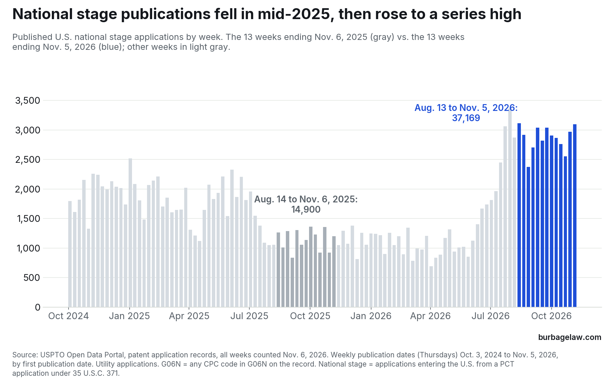

Data · Who is filing on what, edition 5
Machine learning's share of U.S. patent publications rose from 4.4% to 5.2% in a year and is no higher than it was in May
Published U.S. utility applications classified in G06N, the machine-learning class, as a share of all published utility applications, week by week from October 3, 2024 to November 5, 2026.
Listen · Thinking Makes It So, 2026-11-06 · 7 min
All episodes · Subscribe: Apple Podcasts · Spotify
The short version
In the 13 weeks ending November 5, 2026, the USPTO published 6,245 applications classified in G06N, the patent class for machine learning and neural networks. That is 5.2% of the 121,056 utility applications it published in those weeks. In the same 13 weeks of 2025 the figure was 4.4% (3,918 of 89,323). G06N publications rose 59% in a year; all publications rose 36%.
The share did not climb all year. Measured over rolling 13-week periods, it stayed between 4.2% and 4.4% from late 2024 through early November 2025, then rose through the winter and spring to 5.45% in the 13 weeks ending May 28, 2026. Since then it has moved between 5.2% and 5.5%. The most recent figure, 5.2%, is the low end of that range, and it will rise a little: when the weeks from August 27 to October 8 were counted again on November 6, their G06N counts were 2% to 5% higher than in the first count, because classifications are added after publication.
![Line and dot chart of the share of published U.S. utility applications classified in G06N, weekly from October 3, 2024 to November 5, 2026, with a 13-week rolling line. The rolling share was 4.2% to 4.4% through early November 2025 (4.4% in the 13 weeks ending November 6, 2025), rose to 5.45% in the 13 weeks ending May 28, 2026, and has ranged from 5.2% to 5.5% since; it is 5.2% in the 13 weeks ending November 5, 2026. The highest week is September 24, 2026, at 7.3%, when SoftBank Group was first-named applicant on 232 of 777 G06N publications.](2026-11-06-chart1-g06n-share.png)
The highest week was one company
The highest single week in the series is September 24, 2026, when 777 of 10,646 publications, 7.3%, were in G06N. SoftBank Group Corp. was the first-named applicant on 232 of them. These are the applications this series reported on October 15: U.S. filings that claim priority to Japanese applications filed about a year earlier, published together about 18 months after the Japanese dates. Without SoftBank, that week's share was 5.3%, an ordinary week. In the current 13-week window SoftBank accounts for 379 G06N publications; without them the share is 4.9%.
National stage publications fell, then surged, and the cause is unknown
The rest of the system grew too, and most of that growth came from one route. National stage applications enter the United States from an international (PCT) application under 35 U.S.C. 371. The USPTO published an average of about 1,900 a week from October 2024 through June 2025. From late July 2025 through May 2026 the average fell to about 1,100. From July 23, 2026 it has published between 2,377 and 3,362 a week, an average of about 2,900, the highest in the series. The current window holds 37,169 national stage publications against 14,900 in the same weeks of 2025, which fell in the low period. They account for 22,269 of the 31,733 additional publications. Only 3.7% of them are in G06N, against 5.8% of the other publications, so they hold the headline share down.


I tried to disprove the swing first. A second field in the records, the continuity entry naming a PCT parent, shows the same rise (43,406 against 19,907 in the two windows). The national stage applications published in the current window mostly have 371(c) dates in the second half of 2025. In the G06N records of three September 2026 weeks, the median time from that date to publication was about 12 months, against about 11 months in two weeks checked from 2025; on October 29 it was about 20 months. A slowdown in processing followed by a catch-up would produce this pattern, but the records cannot show that, and I found no USPTO statement explaining it. The cause is unknown.
Setting both national stage applications and SoftBank aside gives the same shape at a higher level: 4.8% in the 13 weeks ending November 6, 2025, 5.7% by late May 2026, a high of 5.9% in the 13 weeks ending September 24, and 5.4% now. My reading is that machine-learning applications grew faster than the rest of the patent system from late 2025 into the spring, and since then have grown more slowly than the rest: comparing the 13 weeks ending May 28 with the 13 weeks ending November 5, and leaving out national stage applications and SoftBank, G06N publications rose about 3% and all publications about 7%. The newest weeks will narrow that gap somewhat as classifications are added. Without SoftBank, G06N publications are still almost 50% above a year ago.
What it means for in-house counsel
I would not read this fall's lower share as a cooling of machine-learning patenting. The count is still rising; the latest weeks are not yet fully classified; and the denominator is swollen by national stage publications. The reading that AI keeps taking a larger share of U.S. publications every quarter has not held since May either. The share is higher than a year ago and is no higher than it was five months ago.
The national stage wave adds U.S. publications but, for the most part, not new prior art. Almost all of those applications were published earlier by WIPO as international applications. Under 35 U.S.C. 374, WIPO's publication of an international application that designates the United States is deemed a U.S. publication under section 122(b), and under 35 U.S.C. 102(a)(2) and 102(d) the application, which names another inventor, is prior art to a later-filed claimed invention as of its effective filing date, which for what its priority application describes can be the earliest priority date. In the G06N national stage records of the three September 2026 weeks, the U.S. publication came a median of about 41 months after the earliest priority date. WIPO publishes an international application about 18 months after that date, so the U.S. copy appeared about two years after the WIPO publication. Consider whether the novelty searches you rely on before filing cover WIPO's PCT publications and not only U.S. publications. When performing a search, search by class, not by keywords alone.
Method
Data: USPTO Open Data Portal, patent application records. Every weekly count was retrieved again on November 6, 2026, so all weeks are counted on the same day. November 5, 2026 was fully loaded when retrieved: 9,631 utility applications carry that publication date. The series covers the 110 weekly publication dates (Thursdays) from October 3, 2024 to November 5, 2026. The current window is the 13 weeks from August 13 to November 5, 2026; the comparison is the 13 weeks from August 14 to November 6, 2025.
A publication is counted on its first publication date (earliest publication date in the record), so republications are not counted again. All publications means utility applications with that first publication date. A publication counts as G06N if any CPC code on its record falls in G06N, inventive or additional. G06N is the core machine-learning and neural-network class; it does not capture all AI-related applications (edition 1 showed that many AI applications carry no G06N code), and it includes G06N 10 (quantum computing). Shares over 13 weeks are the sum of G06N publications divided by the sum of all publications.
Classifications are added to records after publication. Weekly counts first taken in October 2026 for the weeks from August 27 to October 8 were 2% to 5% lower than the counts taken on November 6, and the first count for October 15, 2026 (299) was well below the November 6 count (460). The newest weeks in this edition are likely to rise in the same way.
As a check on the totals, the range of publication numbers issued on each of five weeks (October 16 and November 6, 2025; September 24, October 15 and November 5, 2026) matches the count of publications to within about 1.5%.
National stage applications are those the record marks as entering the national stage under 35 U.S.C. 371. As a second measure, records whose continuity data names a PCT parent number 43,406 in the current window against 19,907 in the comparison window. Months from 371(c) date to publication were computed from the filing date of each G06N national stage record in the weeks of September 25 and October 30, 2025 and September 10, 17 and 24 and October 29, 2026. The only recent change to national stage practice I found, the USPTO’s PCT Informed Examination Request pilot that began selecting applications on April 9, 2026, concerns examination, not publication. Months from earliest priority date to U.S. publication were computed for the same records from the earliest of the filing date and the filing dates of every parent, international and foreign application the record claims.
SoftBank Group is counted by first-named applicant (SoftBank Group Corp. and its spelling variants). It has 379 G06N publications and 741 publications in all in the current window, none in the comparison window, and one before 2026. Shares “without national stage applications and SoftBank” remove both groups from the numerator and the denominator.
Source: USPTO Open Data Portal · Burbage Law data series, edition 2 (SoftBank Group) · Morgan Lewis, “USPTO Introduces New Decision Point for PCT National Stage Applications” (April 14, 2026)
Data and citation
You may quote, chart and republish these figures with a citation to this page. Suggested citation:
Jon Burbage, Machine learning's share of U.S. patent publications rose from 4.4% to 5.2% in a year and is no higher than it was in May, Burbage Law: Who Is Filing on What, ed. 5 (Nov. 6, 2026), https://burbagelaw.com/data/2026-11-06-machine-learning-share-levels-off.html
← All data editions · Developments
Burbage Law is the practice of Jon Burbage, a registered patent attorney. 342 United States patents have issued from applications he wrote; the full list is on the Patents page. More about Jon Burbage.
These figures are computed from public USPTO records as described above. They are general information, not legal advice, and do not create an attorney-client relationship.